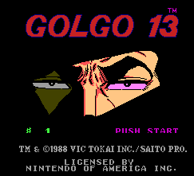
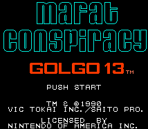

Golgo 13 - Nintendo Games

Controls
- A button: Attack/Shoot
- B button: Jump
- Start: Pause
- Select: [not used]
This game has basically two types of game play. In one type, you are walking around talking to agents to locate the
evil Condor. Along the way, enemy agents pop up and attack you. You start out with a kick as your only weapon,
but you get a gun after defeating the first enemy agent you encounter. The second type is a shooting gallery type view.
Various enemy agents pop up, and you must aim your sniper's sight at them to kill them.

Controls
- A button: Jump
- B button: Attack
- Start: Pause
- Select: [not used]
No other information available at this time.
Anime Video Game Resource Center © 1998 by Luis A. Cruz